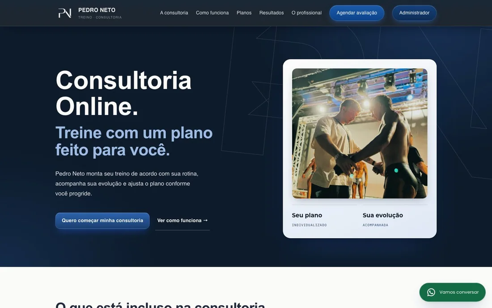

Pedro Neto — Personal Trainer
Solução: Site responsivo com planos de acompanhamento, metodologia, resultados, formulário de agendamento e área administrativa.
- JavaScript
- Express
- Supabase
Detalhes do projeto
Problema:
Apresentar a consultoria online e organizar o contato e os agendamentos de novos alunos.
Atuação:
Desenvolvimento Full Stack, interface responsiva, integração de agendamentos e contato pelo WhatsApp.
Tecnologias
HTML • CSS • JavaScript • Node.js • Express • Supabase